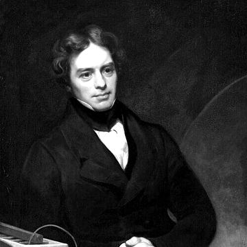
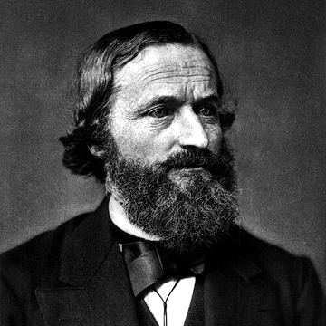
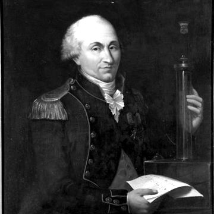

Hipótesis: la hace de gomaGauss: superadoFaraday: temblandoOhm: sin resistenciaKirchhoff: en shockCoulomb: pide distanciaHipótesis: la hace de gomaGauss: superadoFaraday: temblandoOhm: sin resistenciaKirchhoff: en shockCoulomb: pide distancia
1 Caracterización de la muestra
Primero, conozcan al material.
Ficha técnica
Material
Victorio
Resistividad a los nervios
1013 Ω·m igual que la goma. en serio, buscalo.
Conductividad de preguntas difíciles
Nula. Rebotan.
Elasticidad
Ver ensayo 2. spoiler: mucha.
Efectos de la exposición prolongada
Interferencia. aumento de temperatura local (no comprobado, no preguntar).
Resultado esperado
De goma.
Anexo confidencial
La camisa a cuadros sumó puntos en la evaluación.no se informa cuántos.
La goma no conduce la corriente. Victorio no conduce el estrés. Es ciencia.
REC
—¡Yo puedo!
¡Yopuedo!
Registro audiovisual. Declaración espontánea de la muestra.
se presentó sola. nadie le preguntó.
2 Ensayo de tracción
Intentamos romperlo.
(no se pudo)
Apretá el botón Iniciar ensayo: la máquina estira el nombre Victorio hasta novecientos por ciento sin romperlo; lo que se rompe es la máquina.
VICTORIO
(silencio incómodo)
No se rompe
Tensiómetro Comité Mod. 1garantía vencida
fuerza0 N
elongación0 %
rotura estimada30 %
Muestra sujeta. Falta que aprietes el botón rojo.
apretá. no pasa nada. (pasa algo)
subestimamos a la muestra
3 Ensayo eléctrico
Le medimos la preparación.
lectura
0.00 V
ERROR · valor fuera de escala el instrumento no fue diseñado para tanto Victorio
el voltímetro era nuevo
4 Marco teórico
Maxwell, con correcciones de la cátedra.
Física II — Ecuaciones de MaxwellAlumno: Victorio
Ley de Gauss∇·E = ρ/ε₀∇·V = ∞le sale conocimiento para todos lados
Gauss para el magnetismo∇·B = 0dudas = 0monopolos: cero. dudas: también.
Ley de Faraday∇×E = −∂B/∂t∂pregunta/∂t → respuestasi le cambian la pregunta, induce la respuesta
Ampère–Maxwell∇×B = μ₀J + μ₀ε₀ ∂E/∂t∇×(buena onda) = aprobadola corriente de buena onda genera un campo de aprobación
10felicitaciones. no se agrande.
5 · Observaciones del evaluador
Observaciones (no mostrarle a la muestra)
La muestra presenta una seguridad en sí misma insoportable dentro de los parámetros normales.
Durante el ensayo la temperatura del laboratorio subió 2 °C. Causa probable: la muestra el calefactor.
Nivel de facha: no se midió. El instrumento se tildó no corresponde a esta materia.
Se recomienda no mostrarle este informe. Ya se la cree bastante.
6 Repercusiones
«Aislante desde siempre»Edición extraordinaria
El Diario de la Goma
Año I — N.º 10HoyPrecio: un 10
Exclusivo
Victorio va a hacer Física 2 de goma
El material soportó un 900 % de elongación; la máquina de ensayos, no. Los profesores, preocupados: «ya no sabemos qué preguntarle».
La muestra, minutos después del ensayo. Se la ve tranquila.
BUENOS AIRES (Agencia +q). — En una jornada histórica para el electromagnetismo, el alumno confirmó que domina Gauss, Faraday y Ampère «de memoria y de corazón». Consultado por este medio, un capacitor cercano declaró: «Nunca vi a alguien almacenar tanta energía». La máquina de ensayos no quiso hacer declaraciones.
Urgente
Ciencia
Faraday se levanta un ratito para pedirle una foto

Faraday, emocionado (archivo).
«Este pibe sabe más de inducción que yo», declaró desde el más allá.
Economía
Se desploma la resistencia: 0 Ω
Ohm confirmó que frente a Victorio la resistencia cae a cero. El mercado de los nervios, en mínimos históricos.
NERVIOS▼ 99,9 % CONFIANZA▲ ∞
Política
Kirchhoff, en shock

Kirchhoff, todavía pálido.
Confirmó que en el nodo Victorio toda la corriente que entra sale convertida en un 10. «Las leyes son las leyes», dijo.
Clima
100 % de probabilidad de aprobar
10°
Despejado. Preguntas difíciles aisladas, rebotan antes de tocar el suelo. Campos magnéticos alineados en todo el país.
Policiales
Detienen a los nervios de Victorio: no conducían
Peritos confirmaron que son más aislantes que la goma. Quedaron libres por falta de corriente.
Deportes
Coulomb pide distancia

Coulomb, a una distancia prudente.
«La fuerza de este chico es demasiada». Según la ley, baja con 1/r². Con Victorio no baja nada.
Clasificados
VENDO apuntes de Física 2, usados una sola vez. Ya no los necesito. Tratar con V.
BUSCO examen que esté a su altura. Abstenerse parciales fáciles.
SE OFRECE máquina de ensayos, poco uso, un solo golpe. Escucho ofertas.
Fe de erratas
En la edición anterior afirmamos que Victorio es «un capo». Corrección: es un capo bastante lindo. Pedimos disculpas por el error de imprenta.
7 Conclusión
Hipótesis confirmada.
La va a hacer de goma. El laboratorio no tiene más preguntas. Los docentes, tampoco.
Dictamen finalInforme N.º 10 · MAT-VIC-001
Ensayo de tracción ...... superado
Ensayo eléctrico ........ fuera de escala
Marco teórico ........... 10
Observaciones ........... (ver aparte)
Sello del Comité:
Falta el sello.
Suerte. Bueno, no la necesitás. Pero por las dudas.
MF
victorio.exe
El instrumento dejó de responder. Motivo: demasiado Victorio para un solo voltímetro.